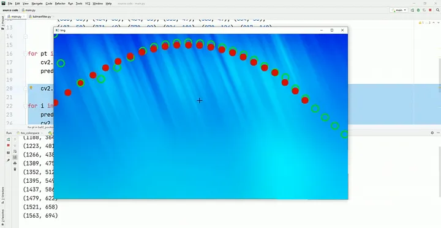

Saira Gillani's
Medium
The Importance of Skilled Data Scientists
Artificial Intelligence is used in the field of Data Science to enable its operations. Whereas Machine learning comprises a variety of techniques used by Data Scientists by programming the computers to learn to work from the data trends. The integration of Data Science can be observed in all the industries where the collection of data is used for customer experience and product consumption...
Paving the Way to Safer Roads With Computer Vision
In our journey through life, roads play an integral role in connecting us to our destinations. But like everything else, they wear out with time. Small road cracks don’t pose much danger to human life, but if left unchecked, they create road conditions that can lead to fatal accidents and major financial losses...

Revolutionizing Transportation Security: License Plate Detection and OCR
Vehicles’ license plates are like their identities. In many situations, keeping track of vehicles that enter or leave a place is important, and reading their license plates offers a foolproof method of doing that...
Monitoring and Health Assessment of Electricity Wires with Edge Detection
Edge detection is a crucial technique in computer vision for finding boundaries of objects within an image. The technique involves pinpointing areas of rapid change in the color and intensity of the pixels in an image...
Demystifying Segmentation
Segmentation is one of the key techniques in computer vision for unraveling the intricate details of visual data. It essentially involves partitioning an image into distinct regions, where each region corresponds to a meaningful object or area of interest...
What is Microsoft Azure?
In today's digital age, businesses and organizations increasingly rely on cloud computing services to drive innovation, enhance scalability, and streamline operations...
AOn The Kalman Filter
The Kalman Filter is a ubiquitous algorithm in engineering and computer vision. It was developed by Rudolf E. Kálmán in the 1960s, and has quietly revolutionized everything from navigation systems to finance...
Sign Language Assistant Using Computer Vision
Sign language is a rich and expressive form of communication used by millions of people worldwide. However, interpreting it is a challenge for most of us who are unfamiliar with it...

Computer Vision in Medical Imaging
Integration of deep learning into medical imaging opened up new horizons for disease detection and diagnosis. With artificial intelligence, we can now detect diseases at their earliest stages, greatly improving the chances of successful treatment...
Safer Workplaces: Ensuring PPE Compliance with Computer Vision
Safety is of paramount concern for both employees and employers at any workplace, and the wearing of Personal Protective Equipment (PPE) like helmets, gloves, masks, vests, etc., by workers is a cornerstone of workplace safety...
AI On The Edge: Embedded Computing Devices for ML
Artificial Intelligence (AI) and Machine Learning (ML) have seen remarkable advancements in recent years, and one of the key enablers of this progress has been the development of embedded computing devices tailored for AI and ML applications...
dentifying Safe Digging Zones With Computer Vision
Excavation is an important operation in many industries such as construction, infrastructure development, and utility maintenance. However, it comes with inherent risks, one of which is the potential damage to underground pipelines carrying vital resources like gas and water...
Facial Recognition using Computer Vision
Facial recognition technology is a powerful tool that holds immense promise for authentication and security. In this article, we’ll explore the idea of facial recognition using computer vision, and discuss its applications and significance in our digital age...
Green Vision: Plant Disease Detection with Machine Learning
In an era where technology continuously transforms various industries, agriculture stands as no exception. The integration of computer vision in agriculture has opened up exciting possibilities, one of which is the detection of plant leaf diseases...